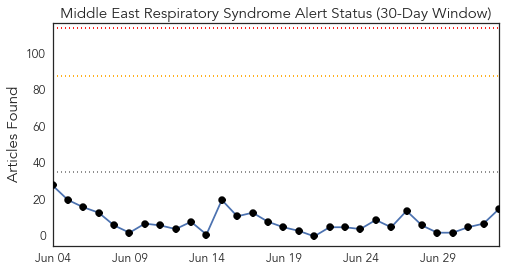
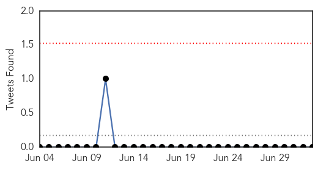
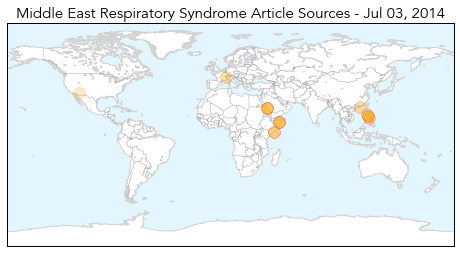
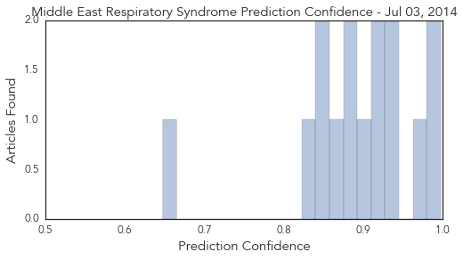

Dengue Fever
30-Day Web Trend
4 alerts, 0 warnings

30-Day Twitter Trend
3 alerts, 0 warnings

Article Locations

Article Confidences

Top Articles:
- 0.998
- Health officials fear disease in surge of illegal immigrants
- 0.990
- Dengue cases in Valley decreasing
- 0.946
- Cebu News, The Freeman Sections, The Freeman
- 0.772
- Dengue prevention programme to begin in Sri Lanka today
- 0.767
- Torres spraying mission to tackle disease-spreading mosquitoes
- 0.681
- Consumers avoid pork after Penang JE cases
- 0.669
- Dengue,Need for proactive monitoring with fix accountability
- 0.665
- Departments ordered to control dengue
- 0.664
- Consumers Avoid Pork After Penang JE Cases
- 0.626
- Results of JE blood samples to be known tomorrow
- 0.595
- No fogging machines in mosquito season
Top Tweets:
-
No tweets found for Jul 03, 2014
MERS
30-Day Web Trend
0 alerts, 0 warnings

30-Day Twitter Trend
0 alerts, 0 warnings

Article Locations
Article Confidences
Top Articles:
- 0.997
- Patient with respiratory symptom and travel history under CHP investigation
- 0.993
- UN: MERS deadly but most cases are preventable
- 0.964
- Manila urges Muslims to delay Hajj due to MERS
- 0.940
- Filipino Muslims urged to abort Mecca trip due to MERS virus
- 0.937
- Pinoy Muslims urged to defer Hajj pilgrimage
- 0.924
- Philippines urges Muslim pilgrims to postpone Mecca pilgrimage because of MERS virus
- 0.916
- Saudi Camel Ban Would Decimate Somalia's Economy
- 0.898
- Hajj pilgrimage to Mecca requires medical clearance
- 0.886
- Philippines: DOH advises against Filipino Muslims travel to Hajj due to MERS
- 0.884
- Somalia says any Saudi camel import ban would hurt economy
- 0.866
- Saudi camel ban would hurt economy, says Somalia
- 0.853
- DOH asks Hajj pilgrims to postpone travel due to MERS-CoV
- 0.848
- any Saudi camel import ban would hurt economy
- 0.828
- Somalia says any Saudi camel import ban would hurt economy
- 0.648
- Swine virus causing nationwide hog shortage turns up in Arizona
Top Tweets:
-
No tweets found for Jul 03, 2014